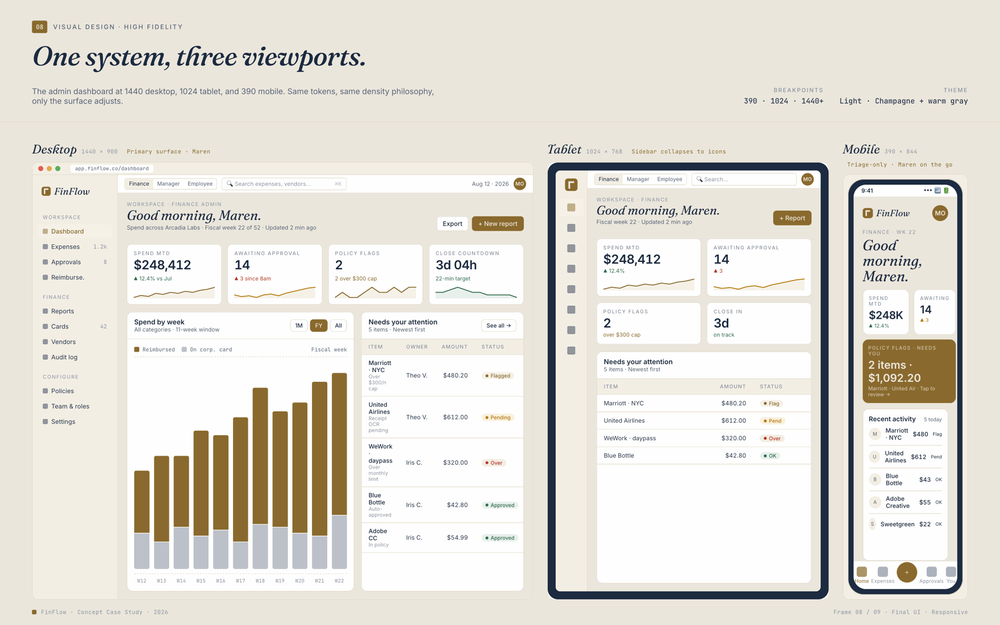

UX Case Study · B2B Fintech
FinFlow
A B2B expense-management platform designed from research through usability testing across three roles, admin, manager, and employee.
The problem
Finance teams manage expenses, approvals, reimbursements, reporting, and card programs across disconnected systems, creating inefficiency, poor visibility, and added administrative overhead.
Goals
Unify submission, approval, and reporting into one role-based platform. Give each role, admin, manager, employee, a workflow built around their actual priorities, and raise task completion across the board.
Discovery · Research
User personas
Three roles, three very different workdays. Anchoring on a primary finance user and the manager and employee who hand work to her kept every flow tied to a real priority.

Discovery · Research
Journey map
Following an expense from submission to approval exposed where time and visibility were lost between roles.

Discovery · Research
Information architecture
A role-aware structure so each user lands in the workspace built for their responsibilities, not a generic dashboard.

Design · Wireframes
Low-fidelity wireframes
Grayscale wireframes lock in layout and hierarchy across the three role views before any visual design.

Design · Wireframes
Mid-fidelity wireframes
Real labels and component structure validate the approval and expense flows before final UI.

Design · System
Design system
A small, disciplined system, color roles, a type scale, a four-step spacing rhythm, and the core components every FinFlow screen is built from.

Design · Accessibility
Accessibility audit
Contrast-checked color pairs, a single visible focus token, and keyboard-first interaction across the dashboard.

Deliver · Final UI
Final UI
The role-based platform, fully designed and responsive, admin, manager, and employee views built on one consistent system.

Deliver · Prototype
Clickable prototype
A fully clickable prototype of the platform: sign-in and onboarding through all three role dashboards, expenses, approvals, corporate cards, reporting, settings, and the mobile views. Real screen-to-screen navigation across 30+ screens, with a search to jump anywhere.

Outcome
The result
A role-based expense platform that streamlines submission, approvals, and reporting while improving visibility for finance teams. The key decision was recognizing that employees, managers, and admins have completely different priorities, so instead of one generic dashboard, each role got workflows built around its primary responsibilities.
Concept project. Task-completion figures from prototype usability testing during the project.